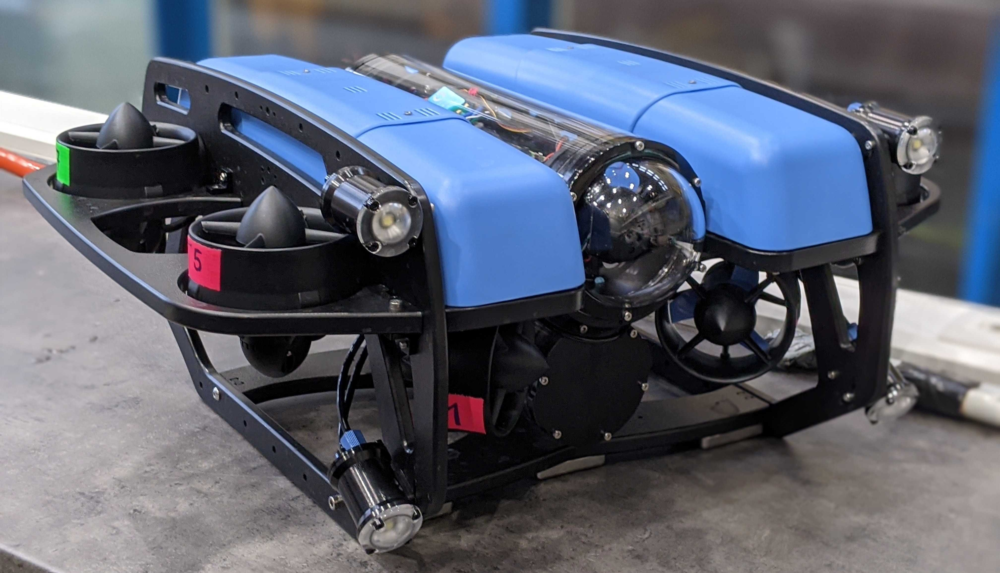

Formulas and Vehicles
Contents:
Class Overview
Concepts
Installation and Setup
The Robot
Tutorials
Depth-Estimator Example
ROS Resources
Assignment 1 - Depth Control
Assignment 2 - Localization and Control
Final Project
Formulas and Vehicles
Welcome to Formulas and Vehicles’s documentation!
Edit on GitHub
Welcome to Formulas and Vehicles’s documentation!

Contents:
Class Overview
General Information
Format and Schedule
Registration
Concepts
Keywords
Hardware Architecture
Installation and Setup
Linux Terminal
Install Ubuntu
Virtual Machine
Install ROS
Workspace Setup
IDE Setup
Start The Simulation
The Robot
Thruster Configuration
Available Sensors
Tutorials
ROS Package
ROS Launch Setup
Names and Namespaces
RQt Multiplot
Lab Workflow
Recording Data Using Bag Files
Dynamic Reconfigure
Depth-Estimator Example
Get the Notebook
Open the Notebook
ROS Resources
ROS Tutorials
Commandline Tools
Visualization Tools
Recording and playing back data
Coordinate Transformations
Messages
ROS Logger
Installing additional Packages
Additional Stuff
Assignment 1 - Depth Control
The Benefits of Simulation
Assignment 2 - Localization and Control
Range Sensor in Simulation
Taking it Further
Some Final Remarks
Final Project
Default World
BlueROV2 Model with Simulated Cameras
AprilTag Models
Modify Gazebo Worlds
AprilTag Detection
Indices and tables
Index
Module Index
Search Page
Other Versions
v: main
Branches
main